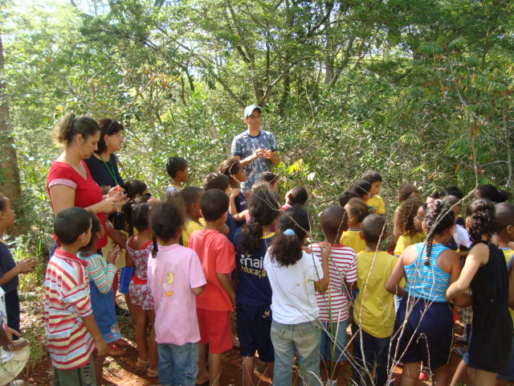

Para voltar à página inicial, clique aqui!
Atividade Curricular de Extensão I

Na disciplina de Atividade Curricular de Extensao I, administrada pelo professor Gielson Oliveira, vamos conhecer e aprender um pouco sobre Atividade de Extensao.
Algo que é muito abrangente e muito interessante, principalmente, porque envolve as pessoas externas do campus, ou seja, a comunidade.
- Objetivo:
- Desenvolver uma atividade (programa, projeto, curso de extensão, evento ou prestação de serviço) com a comunidade externa para colocar em prática
seu conhecimento científico adquirido ao longo do curso
- Etapas de um projeto de extensao:
- Identificação;
- Objetivo;
- Problemática;
- Justificativa;
- Métodos;
- Recursos;
- Cronograma;
- Parcerias.